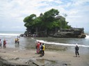
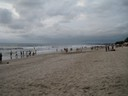

Resor · 2010-10-17 @ 06:47:32 Allmänt Permalink
Sydvästerut
Det där med avståndsuppfattning, står väl i relation till vad vi är vana vid. I Stockholm tycker vi att Gävle funkar, Karlstad nåja. Sälen, Trysil, Gbg och Malmö. Där börjar dagsgränsen gå. 50 mil är en ansenlig sträcka.
I Australiens och Sibiriens inländer är det väl en sträcka man tar för att köpa chips och grogggvirke till kvällen.
Här är ju det största avstånd de har, tvärs över ön. Och det är ju inte så farligt långt. Men oj oj oj när man ska köra Lovina - Kuta, vad långt de säger att det är. Nu är jag så fruktansvärt öm i baken från ritten i går så det kändes långt också.
Ett par saker till om den dagen. Balinesaren själv menar att de är lata, därför skräpar de ner och lär sig inte engelska. De får knappt jobb för i städer, på kontor, banker mm anställer man muslimer. Balinesarna har så många högtider så de knappt får nåt gjort! Minsta lilla familjehögtid så ska alla vara lediga en vecka :-) Och muslimerna klagar för skolan är stängd för ceremonier hela tiden.
Under ridturen fick jag även se en liten plan, med plaststolar, mitt i ingenstans. jag frågade om det var nån byrådsplats eller nåt för barn, nej, det var en tuppfäktningsplats. Det är förbjudet, så de samlas på landsbyggden på hemliga ställen och spelar om pengar.
Ut från Lovina västerut, svänger upp i bergen vid Seririt mot Pupuan. Det här är en väldigt vacker väg!! Grönt, fint, vackert. Och biltrafiken är ok. Ja, man kan få möte på insidan och samtidigt kör en mötande bil om och tar ditt körfält. Men folk väjer och hjälps åt. Ett litet tut som varning innan de kör om. Inte värre än färden upp från Santorinins hamn! Eller från Capri upp till Anacapri med buss. Same same. Min egen väjreflex är nog tyvärr fortfarande högerorienterad. När man färdas gäller det att veta vad nästa by heter, med rätt uttal. De har ingen tolerans med fel uttal och dessutom har varje plats flera olika namn. Och vet de inte svarar de ändå! Många vet ingenting, antingen för att de helt enkelt inte pratar med utlänningar, eller för att de är gästarbetare. Jag frågar några stycken och tar det vanligaste svaret.
Jul! Lukt av kanel och kryddnejlika på tork på dukar utanför husen.
På vägen åker jag in på en liten marknadsplats och hittar ett mörkt kyffe där det kan vara mat. Jodå. Hon som jobbar där säger nåt och jag nickar. En tallrik med överaskning :-) En del läskigt kött och en del gott. Skulle jag äta igen skulle jag kunna välja från hennes skålar, särskilt nåt finstrimlat torkat kött med chilismak. Skålar hon plockar ur händerna med och ger mig. Jaja, blir jag inte sjuk nu så blir jag det aldrig. På de små hyllorna framför mig där jag äter, bland trångt med lokala män, ligger en trave paket med Mariekex, tillverkade i Indonesien.
Jag stannar och beundrar bevattningen av risodlingarna. Varje liten platå och del är avgränsad, och har ett breddavlopp i leran som rinner ner i nästa. Hundratals i rad där allt måste funka.
En liten ödla springer över väggen nära mig. Verkar som en fin tatuering att ha på vaden. Bra idé men inte i kväll. Inte i kväll…
Jag beställer en fruktjuice, pineapple-lemon.
Krånglar mig ner längs västkanten av Bali, Seminyak, Legian, Kuta. Och hittar till "Senen" på tips från Lonely Planet. Perfekt! Centralt, egen lite billig restaurang med dubbel stoppning i stolarna för min häst- och moppeömma bakdel. En musikslinga snurrar i huvudet när jag kliver in på rummet "How low can you go?" Sha-na-na tror jag. 70.000 och värt det, say no more. Men jag ökar till 80 och får sittring på toa :-) Ni fattar…
Drar ett par varv runt Legian och Kuta och ser snygga vältränade hunks med surfbrädor. Men jag vet jag. Knarkar gör dom. Allihop.
Här är alla de turister jag inte sett till tidigare, men det ser ut som alla andra turistorter och därmed lite ointressant. Vill folk fortfarande ha disko och DJ's i strobljus? Lite -70 tal. 2 Balitjejjer i dörren och 20 Balikillar innanför och 4 holländska tjejer. Jag är gammal och fattar inte längre hur kul det är att vara full, inte fatta vad folk säger, dansa och hångla med någon man inte vet namnet på som var jättetrevlig!..faktiskt. Och sen vänta på kontoutdraget.
Restauranger med fina röda dukar. En annan dag skulle jag ju sitta/har suttit där också. Men i dag känns det lite "Putell på er grevar och baroner" i min "vita" tröja jag haft dygnet runt några dar. Jag vill äta det och där de själva äter.
Monumentet så klart, över bomben. Fortfarande obebyggt på tomten. 5 svenskar, bara tjejer, på tavlan.
Det kanske framgår vart mina preferenser går här. Bergen och norr, friskt och grönt, fortfarande Bali. Kuta ser ut som Patong.
Rummen har utomhusduschar med väggar mellan, väggarna har ingjutet glassplitter i betongen högst upp. Det känns tryggt så ingen tittar på mig. Eller om jag tänkte smita från rummet. En minimal rastgård!
En till jos, pineapple-cocos. Gott! 5kr styck.
Bali har palmolja, hela Indonesien har gott om det, ett par % av deras BNP tror jag. Greenpeace bev stoppade när de ville komma förbi på sin klimatresa. Men om man bara skördar från de träd som finns och inte planterar nya bestånd då? Kan det inte finnas en KRAV-märkning av palmolja? God och dålig liksom? För det är ju surt att inte få sälja den man har, som inte ersatt regnskog.
Armarna kletar fast i vaxduken. Pling plong från traditionellt Baliinstrument på TV. Bambuxylofon ser det ut som. Och jag har bokat biljett till Thailand nu, för jag fick ett mail från dykcentret att de saknade mig :-)
---
21.30 nattrond, samma tur som tidigare. Samma scen som alltid, "mister, mister" och "Sweet home Alabama" i baren med vita familjer. Hunkarna står på bordet i dunka dunka baren och brölar inramade av Red bull-reklam. Det låter för illa, rent tekniskt/akustiskt. Nåt är väldigt överstyrt eller väldigt trasigt.
I Australiens och Sibiriens inländer är det väl en sträcka man tar för att köpa chips och grogggvirke till kvällen.
Här är ju det största avstånd de har, tvärs över ön. Och det är ju inte så farligt långt. Men oj oj oj när man ska köra Lovina - Kuta, vad långt de säger att det är. Nu är jag så fruktansvärt öm i baken från ritten i går så det kändes långt också.
Ett par saker till om den dagen. Balinesaren själv menar att de är lata, därför skräpar de ner och lär sig inte engelska. De får knappt jobb för i städer, på kontor, banker mm anställer man muslimer. Balinesarna har så många högtider så de knappt får nåt gjort! Minsta lilla familjehögtid så ska alla vara lediga en vecka :-) Och muslimerna klagar för skolan är stängd för ceremonier hela tiden.
Under ridturen fick jag även se en liten plan, med plaststolar, mitt i ingenstans. jag frågade om det var nån byrådsplats eller nåt för barn, nej, det var en tuppfäktningsplats. Det är förbjudet, så de samlas på landsbyggden på hemliga ställen och spelar om pengar.


Ut från Lovina västerut, svänger upp i bergen vid Seririt mot Pupuan. Det här är en väldigt vacker väg!! Grönt, fint, vackert. Och biltrafiken är ok. Ja, man kan få möte på insidan och samtidigt kör en mötande bil om och tar ditt körfält. Men folk väjer och hjälps åt. Ett litet tut som varning innan de kör om. Inte värre än färden upp från Santorinins hamn! Eller från Capri upp till Anacapri med buss. Same same. Min egen väjreflex är nog tyvärr fortfarande högerorienterad. När man färdas gäller det att veta vad nästa by heter, med rätt uttal. De har ingen tolerans med fel uttal och dessutom har varje plats flera olika namn. Och vet de inte svarar de ändå! Många vet ingenting, antingen för att de helt enkelt inte pratar med utlänningar, eller för att de är gästarbetare. Jag frågar några stycken och tar det vanligaste svaret.
Jul! Lukt av kanel och kryddnejlika på tork på dukar utanför husen.
På vägen åker jag in på en liten marknadsplats och hittar ett mörkt kyffe där det kan vara mat. Jodå. Hon som jobbar där säger nåt och jag nickar. En tallrik med överaskning :-) En del läskigt kött och en del gott. Skulle jag äta igen skulle jag kunna välja från hennes skålar, särskilt nåt finstrimlat torkat kött med chilismak. Skålar hon plockar ur händerna med och ger mig. Jaja, blir jag inte sjuk nu så blir jag det aldrig. På de små hyllorna framför mig där jag äter, bland trångt med lokala män, ligger en trave paket med Mariekex, tillverkade i Indonesien.
Jag stannar och beundrar bevattningen av risodlingarna. Varje liten platå och del är avgränsad, och har ett breddavlopp i leran som rinner ner i nästa. Hundratals i rad där allt måste funka.
En liten ödla springer över väggen nära mig. Verkar som en fin tatuering att ha på vaden. Bra idé men inte i kväll. Inte i kväll…
Jag beställer en fruktjuice, pineapple-lemon.


Självklart ska jag kolla nåt "man borde". Templet "Pura Tanah Lot", ett sjötempel. Inträde, promenad längs marknadsstånd, trappor. Nere i havet ligger en liten liten ö med ett tempel. Huvudsakligen rekonstruerat och bara fasad. Ja ja. Lite som fransmännen, finns det en sten i vattnet ska man bygga en borg eller ett kloster där.Krånglar mig ner längs västkanten av Bali, Seminyak, Legian, Kuta. Och hittar till "Senen" på tips från Lonely Planet. Perfekt! Centralt, egen lite billig restaurang med dubbel stoppning i stolarna för min häst- och moppeömma bakdel. En musikslinga snurrar i huvudet när jag kliver in på rummet "How low can you go?" Sha-na-na tror jag. 70.000 och värt det, say no more. Men jag ökar till 80 och får sittring på toa :-) Ni fattar…
Drar ett par varv runt Legian och Kuta och ser snygga vältränade hunks med surfbrädor. Men jag vet jag. Knarkar gör dom. Allihop.
Här är alla de turister jag inte sett till tidigare, men det ser ut som alla andra turistorter och därmed lite ointressant. Vill folk fortfarande ha disko och DJ's i strobljus? Lite -70 tal. 2 Balitjejjer i dörren och 20 Balikillar innanför och 4 holländska tjejer. Jag är gammal och fattar inte längre hur kul det är att vara full, inte fatta vad folk säger, dansa och hångla med någon man inte vet namnet på som var jättetrevlig!..faktiskt. Och sen vänta på kontoutdraget.
Restauranger med fina röda dukar. En annan dag skulle jag ju sitta/har suttit där också. Men i dag känns det lite "Putell på er grevar och baroner" i min "vita" tröja jag haft dygnet runt några dar. Jag vill äta det och där de själva äter.
Monumentet så klart, över bomben. Fortfarande obebyggt på tomten. 5 svenskar, bara tjejer, på tavlan.



Stranden är faktiskt fin, om man gillar sandstränder, vilket jag inte gör. Vågor som bryter, bra för alla surfare, men inget vidare för alla andra.Det kanske framgår vart mina preferenser går här. Bergen och norr, friskt och grönt, fortfarande Bali. Kuta ser ut som Patong.
Rummen har utomhusduschar med väggar mellan, väggarna har ingjutet glassplitter i betongen högst upp. Det känns tryggt så ingen tittar på mig. Eller om jag tänkte smita från rummet. En minimal rastgård!
En till jos, pineapple-cocos. Gott! 5kr styck.
Bali har palmolja, hela Indonesien har gott om det, ett par % av deras BNP tror jag. Greenpeace bev stoppade när de ville komma förbi på sin klimatresa. Men om man bara skördar från de träd som finns och inte planterar nya bestånd då? Kan det inte finnas en KRAV-märkning av palmolja? God och dålig liksom? För det är ju surt att inte få sälja den man har, som inte ersatt regnskog.
Armarna kletar fast i vaxduken. Pling plong från traditionellt Baliinstrument på TV. Bambuxylofon ser det ut som. Och jag har bokat biljett till Thailand nu, för jag fick ett mail från dykcentret att de saknade mig :-)

---
21.30 nattrond, samma tur som tidigare. Samma scen som alltid, "mister, mister" och "Sweet home Alabama" i baren med vita familjer. Hunkarna står på bordet i dunka dunka baren och brölar inramade av Red bull-reklam. Det låter för illa, rent tekniskt/akustiskt. Nåt är väldigt överstyrt eller väldigt trasigt.